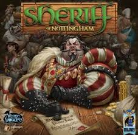

Robor-Planning
C++

The implementation for a deposit of boxes with robots which move the boxes between them. The robots take commands from a person. The deposit is defined by a configuration of map[LIN][COL], there are N robots which are responsible for moving the boxes. Map[x][y] represents the number of boxes from the cell of coordinates x, y in deposit. They have to memorise all the commands in a queue until there is given an "EXECUTE" command and they have to execute the first command from the queue. The robots are able to recognise and answer to commands of dropping and getting (boxes), last executed command or how much a command have stayed in the queue
Sheriff-of-Nottingham
JAVA
 This is a implementation of the boardgame Sheriff of Nottingham in java. Here are 4 strategies and based on the cards ids (which came shuffled as input), the players and theirs associations with a strategy given in input, this program will return each player with his final points after a game simulation. The stregies:
• Basic: he is a fairplay player, allways puts in the sack the legal goods and when he is sheriff he inspects every sack
• Greedy: he plays similar with basic in odd rounds, but in even rounds he tries to add an illegal good in sack. At the inspection he checks everyone
• Bribed: he tries to put as much illegal goods as possible in his sack. When he is sheriff he inspects the player from his left side and the one from his right side
• Wizard: he sacrifices the first round to collect some informations about his opponents and then he plays based on this informations
Hit-The-Road
C++

A mini google maps implementation
This application has the purpose to give the answer for 5 tasks which are frequently encountered in applications like google maps or waze. Based on some input data such as:
1. A list of cities
2. The roads between them (source - destination). The roads are unidirectional and the distance is 1 unity by default
3. A list of cities with gas station.
[4]. A list of cities and for each I have to find out the cities with which it does not have a path/connection.
[5]. A list of cars with the following details: the city where it is, how much gas does it have and the consumption per unity.
[6]. A list of bus routes with the following details: source_city, destination_city and the number of travelers
TASK 1: Is to find out the most crowded city. (the rule is that the most crowded city is the one which represent the destination for most roads)
Task 2: Is to find out if the map is valid. (the rule is: if there is a road between each city the map is valid, the cost for this road doesn't matter, in other words if the map is a strongly connected component)
Task 3: Is to take the list from [4] and find out a list for each city with inaccessible cities for it (there is not roud between them)
Task 4: Is to take the list from [5] and find out for each car the closest gas station from another city (the shortest road to a city with gas station) and print "DA" if the car can arrive in a city with gas station and the remaining fuel, or "NU" if it can't.
Task 5: Is to take the list from [6] and find out the route which is traveled by the most travelers, print the route and the number of travelers. It is known that every bus is going on the shortest route between 2 cities and the buses does not stop between source city and destination
Tic-Tac-Toe
C++

This is an implementation for the x&0 game in c++. For playing it you have to choose if you want to start, then to insert the coordinates for "x" (by default you play with x and computer with "0"). The implementation tries to win or to be very hard to be beaten. For it there is a check function which decide if the game is end. "Check" function checks each posibility for 3 elements to be in a row or if the matrix is full, in this cases result that the game is finished. The function "fill" is the function which decide where to put elements for the computer and decide it based on the information given by the "danger" function which return the coordinates where there is a posibility to end the game (where there are 2 elements in a row and the player wait for the third). If there is not this danger the "fill" function tries to create a posibility like that and decide to put elements where is a perspective to put 3 in a row, if it is not possible too, then it put the element where is possible. So the program looks for safety first and decide if it has to do a defensive move, then it looks for an offensive move, lastly it would choose the remaining positions with no perspective.
ER-simulator
JAVA
This is a application which simulates a real life situation from a hospital. Based on a input where you receive data about the patients (such as: name, illness type, severity of the illness, the moment when they arrive to the hospital) and data about doctors (such as: name,specialzation, if he is surgeon, self capacity for which he can treat) and the number of nurses. The application is able to send the patients in priority queues based on their illness type and severity. Also it is able to make decisions for doctors such as: treatment at home, treatment in the hospital (here the patients are consulted by the nurses periodically), to surgery (after surgery they are also kept in the hospital) or sent to tehnicians for detailed investigation, all of this decisions are based on mathematical ecuations and some constants. If the patients are sent to tehnicians, after this they are redistributed again in queues and the doctors respect the decisions from investigations. The application is using Observer pattern so the "road" of a patient is easier to follow. The application receives the number of rounds for which it should go on.
Cryptography
ASSEMBLEY

It is a project in assembly language where I had to do tasks in which I had to decode strings encoded with: xor, rolling xor, xoer between two strings represented by hexazecimal characters, bruteforce or Vigenere Cipher
Python-Interpreter
Racket

This application is in Racket and has the aim to be an interpreter for python language. It is able to read and to do a minimum set of operations such as: add, subtract, multiply or divide, but also it is able to recognise and to iterate through while or for loops for which it has to do comparations and conditional jumps. It is using Cpython with a stack machine model.
Version-Control-System
JAVA

This is the implementation of a Version Control System simulation which has the role to do a minimum set of unix instructions such as: create, change or delete files. Also, the application can do vcs instructions (such as: status, branch, commit, checkout, log or rollback) and is able to save the current state of the file system. The purpose of this application is to be able to come back to prevoius states of the file system. In this application you can create files, write something in, etc. And all of this changes will be memorised in staging. Eventually if we give a commit command the staging area will be empty and the changes will be saved as a commit in a special array of commits (each branch has this type of array). Also, we can create braches. This is a project in java and I used Vistor pattern where every type of command extends a class which "accept" a vistor class, from "accept" method is called the "visit" method from visitor, then from visitor is called "execute" method for that specific command. Visit method has an abstract class as parameter and this class is extended by every class which represent a command.
Client-Server-Application
C++

It is a Client-Server Application in which there are 3 components:
The first component is the TCP client (subscriber) which represents a client who would want to subscribe to different topics. He can chose if he want to receive messages even though he is offline (he will receive all the collected messages, while he was offline, at once when he will be online back, similar with what is happening when we do not check or mail for a while). Or he can chose to do not receive anything while he is offline.
The second component is a UDP client which has the role to generate messages from different topics to the server
The third component is the server which has a UDP connection with the second component and a TCP connection with the first component where it uses multiplexing for dealing easily with many subscribers. It has the role to parse the UDP messages and the TCP connections and messages (with the intention to memorise the subscribers and theirs actions of subscribing or unsibscribing to the topics). It takes the messages from the UDP and send them only to the clients which are subscribed to that topic. (It is similar with what gmail/yahoo does when a travel agency for example sends offers via email to their subscribers, what is more is that situation with online/offline choice of the subscribers).